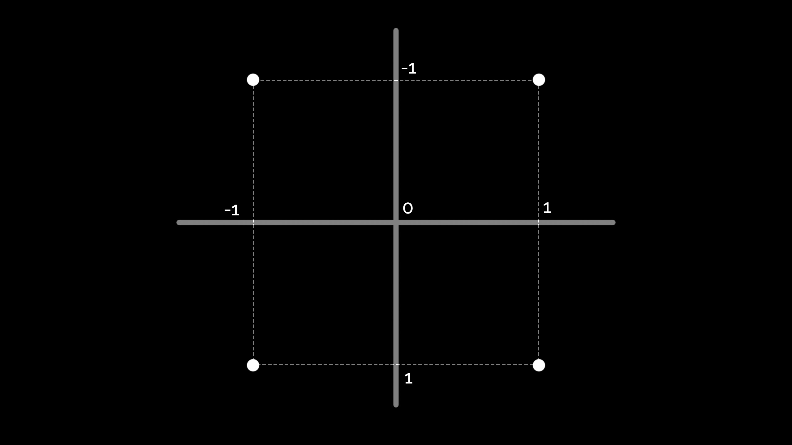
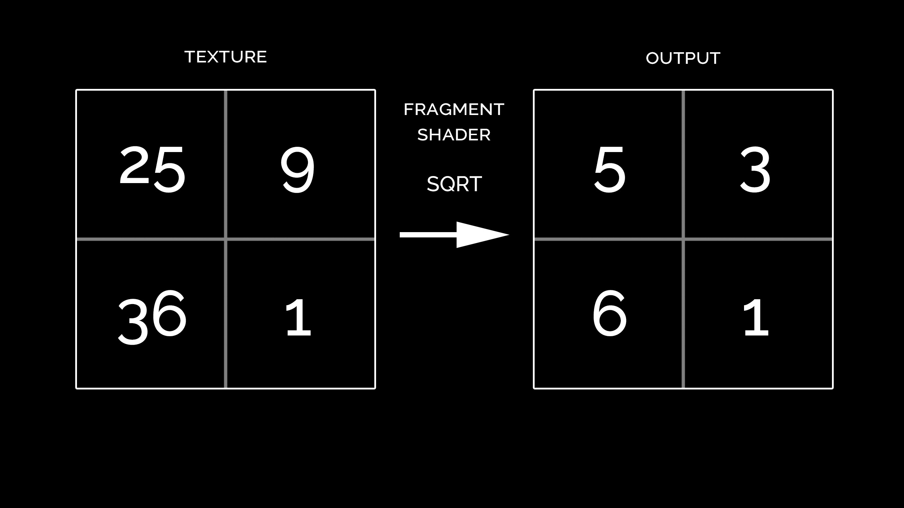
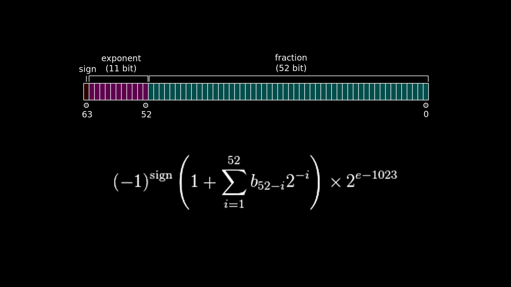

"A computer program that is used to do shading"
"Depicting depth perception
in 3D models or illustrations
by varying levels of darkness"
"A computer program that tells the computer
how to draw something"
Pixar, RenderMan, 1988
Graphic procedures like:
surfacing and texturing,
lighting and shadowing,
texture and geometry generation
|
Renderman shader: red mesh |
Renderman shader: red shaded mesh |
Geometry transformation
make things look "3D",
distort objects
Color output
surfaces, textures,
postprocessing
We have an array of values that represent geometry
[ -1, -1, 0 ], [ 1, -1, 0 ], [ 1, 1, 0 ], [ -1, 1, 0 ]
In this case, it's the beginning of a square
The vertex shader takes this data, and some other values
(model-view and projection matrix, and others)
and turns the 4 points into 4 projected points
These four points exist in mathematical space,
they just represent a concept.
We need to specify how to draw it:
points, wireframe or solid
We'll choose solid
The solid projected square gets "discretised"
base on the output display,
like your laptop or phone screen
Here's where some of the magic happens:
the system fills the space connecting these dots
and calculates what pixels on your display
need to be drawn
The rest is up to the fragment shader
It gets called for each of these small squares,
and the correct output color is calculated.
The result is a framebuffer with an image!
So we have several operations
that can be done per vertex,
and some that can be done per fragment
"per vertex" is usually less expensive than "per fragment"
(several thousand vertices vs several million pixels)
the Graphics Processing Unit take this idea
and makes it faster
Data is defined in specific formats, and transfered
from main CPU memory to GPU memory
Vertices, faces, matrices, textures...
Shaders are bundled in programs
Groups of geometries are bound with programs
and related data like light color, texture, etc.
You can think of it as a material:
tells the system how to represent a geometry
Geometry + material = shaded object
The main program issues commands to the GPU
to draw each object
"Your mission, should you choose to accept it
it's specifying those commands"
GPUs have several units that can execute
shader code and access data in the GPU memory
All those units run in parallel,
computing a vertex or a fragment,
much faster than other kinds of CPUs
Based on OpenGL ES 2.0
It's a JavaScript API
Shaders are coded in GLSL
(OpenGL Shading Language)
A program has a vertex and a fragment shader
It's easy! But it's even easier with three.js
var scene = new THREE.Scene();
var aspectRatio = window.innerWidth / window.innerHeight;
var camera = new THREE.PerspectiveCamera( 75, aspectRatio, 0.1, 1000 );
camera.position.z = 5;
var renderer = new THREE.WebGLRenderer();
renderer.setSize( window.innerWidth, window.innerHeight );
document.body.appendChild( renderer.domElement );
var geometry = new THREE.BoxGeometry( 1, 1, 1 );
var material = new THREE.MeshBasicMaterial( {
map: THREE.ImageUtils.loadTexture( 'map.jpg' )
});
var cube = new THREE.Mesh( geometry, material );
scene.add( cube );
renderer.render( scene, camera );THREE.ShaderMaterial
THREE.RawShaderMaterial
var scene = new THREE.Scene();
var aspectRatio = window.innerWidth / window.innerHeight;
var camera = new THREE.PerspectiveCamera( 75, aspectRatio, 0.1, 1000 );
camera.position.z = 5;
var renderer = new THREE.WebGLRenderer();
renderer.setSize( window.innerWidth, window.innerHeight );
document.body.appendChild( renderer.domElement );
var geometry = new THREE.BoxGeometry( 1, 1, 1 );
var material = new THREE.ShaderMaterial( {
uniforms: {
map: { type: 't', value: THREE.ImageUtils.loadTexture( 'map.png' ) }
},
vertexShader: vsSource,
fragmentShader: fsSource,
} );
var cube = new THREE.Mesh( geometry, material );
scene.add( cube );
renderer.render( scene, camera );
uniform mat4 modelViewMatrix;
uniform mat4 projectionMatrix;
uniform mat4 normalMatrix;
attribute vec3 position;
attribute vec2 uv;
varying vec2 vUv;
void main() {
vUv = uv;
gl_Position = projectionMatrix * modelViewMatrix * vec4( position, 1.0 );
}
uniform sampler2D map;
varying vec2 vUv;
void main() {
gl_FragColor = texture2D( map, vUv );
}<script id="vertexShader" type="x-shader/x-vertex">
// Vertex shader code
</script>
<script id="fragmentShader" type="x-shader/x-vertex">
// Fragment shader code
</script>
<script id="fragmentShader" type="text/javascript">
var material = new THREE.ShaderMaterial( {
vertexShader: document.getElementById( 'vertexShader' ).textContent,
fragmentShader: document.getElementById( 'fragmentShader' ).textContent,
} );
</script>
It's a subcase of this technique
Create a quad that covers the screen,
set the current renderbuffer as source,
play with the values
Voilà, postprocessing!
We're not limited to graphical output!
We can use shaders to process arbitrary data
That's what we call GPGPU
General-purpose computing on graphics processing units
Frameworks and platforms
OpenCL (Open Computing Language),
CUDA (Compute Unified Device Architecture)
In the meantime,
we can do it with WebGL
It's a bit like postprocessing
First, our geometry is going to be a quad.
There's not going to be any perspective transformation
We want the number of output pixels to be exactly
the number of our input values.
We load our input data in textures
Encoding data in textures is tricky
Images are usually vec4 specifying RGBA
Sometimes we can use float textures
but we can only read from 4-bytes buffer.
We have to encode numbers in 32 or 64 bits
Integers
| 1 byte | 8 bits | 2^8 = 256 values |
| unsigned: 0 to 255 signed: -128 to 127 | ||
| 4 bytes | 32 bits | 2^32 = 4,294,967,296 values |
| unsigned: 0 to 4,294,967,295 signed: −2,147,483,648 to 2,147,483,647 | ||
None of these can hold decimal values
Floating point
IEEE Standard for Floating-Point Arithmetic (IEEE 754)
| single precision | 32 bits | ±1.18×10−38 to ±3.4×10^38 |
| approx. 7 decimal digits | ||
| double precision | 64 bits | ±2.23×10^−308 to ±1.80×10308 |
| approx. 15 decimal digits | ||
IEEE 754 (continued)
anyhow
Preparing data
var data = new Float32Array( width * height );
var inputData = new Uint8Array( data.buffer );
var shader = createEvaluationShader();
shader.uniforms.tInput.value = new THREE.DataTexture(
inputData,
width,
height,
THREE.RGBAFormat,
THREE.UnsignedByteType
);
The vertex shader doesn't do much:
it makes sure the output is formatted as we expect,
an unprojected quad with the right size
uniform mat4 modelViewMatrix;
uniform mat4 projectionMatrix;
attribute vec3 position;
attribute vec2 uv;
varying vec2 vUv;
void main() {
vUv = uv;
gl_Position = projectionMatrix * modelViewMatrix * vec4( position, 1.0 );
}The fragment shader does the calculations
Reads from the input texture(s), pixel by pixel,
calculates in parallel and writes to output
uniform sampler2D tInput;
varying vec2 vUv;
float calculate( float v ) {
return sqrt( v );
}
void main() {
vec4 val = decode_float( texture2D( tInput, vUv ) );
float res = calculate( val );
gl_FragColor = encode_float( res );
}Running
var renderer = new THREE.WebGLRenderer( { antialias: false } );
renderer.setSize( width, height );
renderer.setPixelRatio( 1 );
var scene = new THREE.Scene();
var camera = new THREE.OrthographicCamera(
width / - 2, width / 2,
height / 2, height / - 2,
-10000, 10000
);
var geometry = new THREE.PlaneBufferGeometry( width, height );
var quad = new THREE.Mesh( geometry, shader );
scene.add( quad );
var result = createRenderTarget( width, height );
renderer.render( scene, camera, result );Reading back
Rendered data is in GPU memory
var pixels = new Uint8Array( 4 * width * height );
var gl = renderer.context;
var framebuffer = result.__webglFramebuffer;
gl.bindFramebuffer( gl.FRAMEBUFFER, framebuffer );
gl.viewport( 0, 0, width, height );
gl.readPixels( 0, 0, width, height, gl.RGBA, gl.UNSIGNED_BYTE, pixels );
gl.bindFramebuffer( gl.FRAMEBUFFER, null );
var output = new Float32Array( pixels.buffer );Questions?
Hit me up on twitter!
@thespite